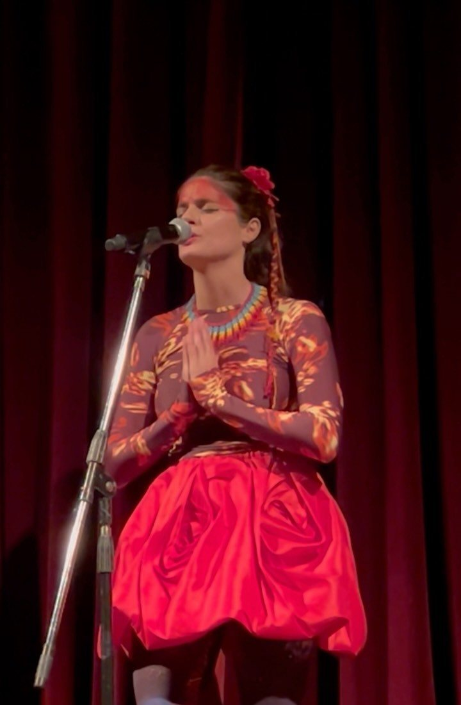
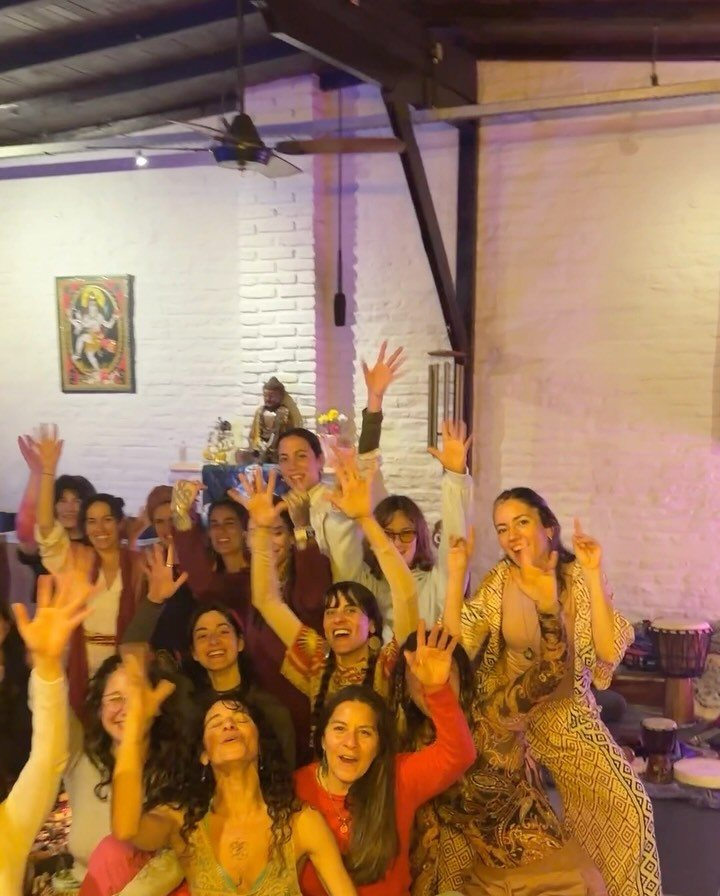
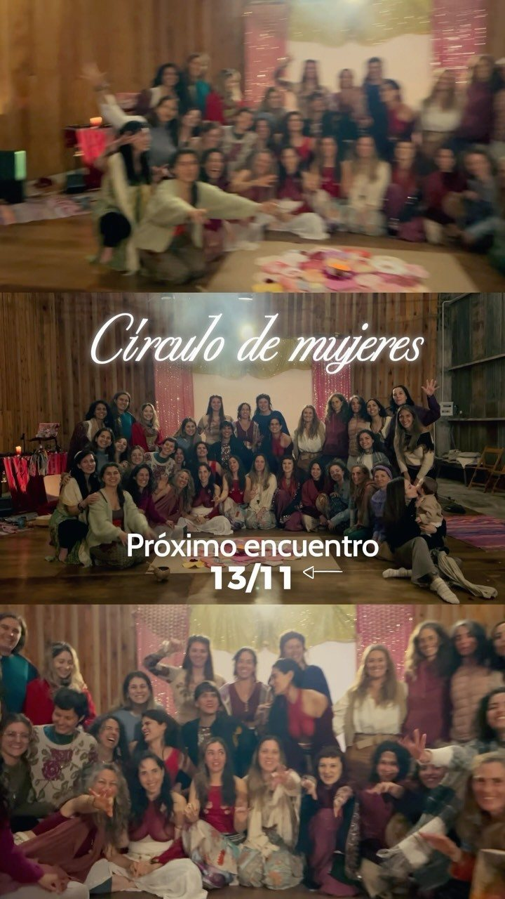
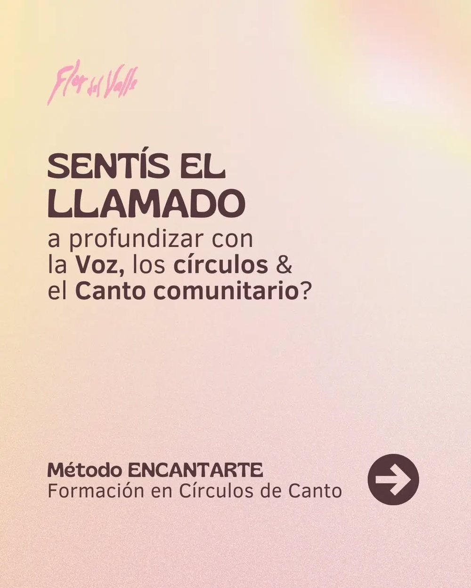
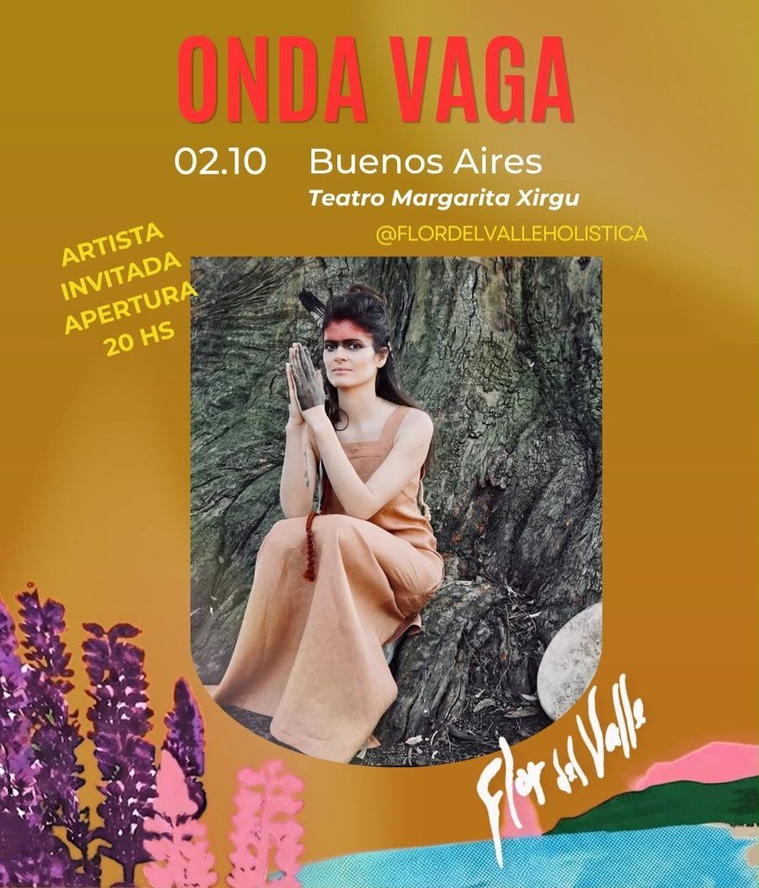
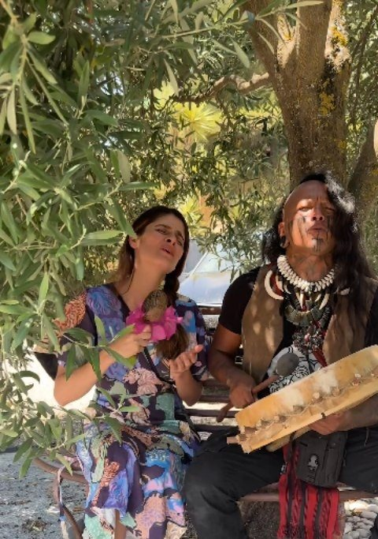

Canciones que nacen de abrazar las sombras, aceptar la vida y transformar el dolor en arte y medicina. Círculos de canto, ceremonias y encuentros para volver al cuerpo y a la voz.

«Vuela, hija mía, quiero que seas feliz.» Una canción que nació de un viaje profundo, entre naturaleza, belleza y asombro.
Seguila en SpotifyNo se trata de «aprender a cantar», sino de recordar una capacidad natural que fue silenciada por la vergüenza, el miedo y la exigencia. Mantras, cantos chamánicos, percusión y dinámicas grupales para reconectar con el cuerpo, los elementos y la comunidad.

El canto regula, ordena, descarga y une. Un espacio para liberar el sonido, respirar y habitar la voz con libertad.
Quiero sumarme →
Volver al Templo de la Diosa: elementos, canto, danza, arte y ritual para despertar los dones que habitan en nosotras.
Pedí la info →
Formación en Círculos de Canto para facilitadores, terapeutas, profes de yoga, músicos y quienes sientan el llamado. Incluye cuaderno de dinámicas y cantos.
Quiero formarme →«En mi vida hay tres grandes viajes que me guían: la música, las plantas y la comunidad.»
Abrió el show de Onda Vaga en el Teatro Margarita Xirgu, con percusión y guitarra en vivo. Ceremonias, festivales y círculos en Argentina y Barcelona.


Escribime para círculos, ceremonias, la formación o para llevar la música a tu evento.